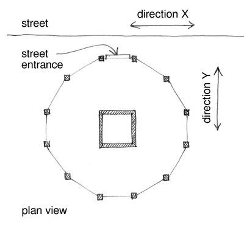

Dirección sin especificar[D99]
Use esta opción si el edificio no tiene una fachada paralela a la calle. Escoja cualquier otra fachada y defina la dirección X paralela a esta. La dirección Y será perpendicular (ortogonal) a la dirección X. Esto incluye edificios que no están ubicados cerca a las calles o su orientación no es paralela a la calle. Esto también aplica a cualquier edificio en donde la información de su dirección no está disponible

Dirección no especificada - cuando la calle no puede ser identificada

Dirección no especificada- caso en el que un edificio con una forma curva en planta